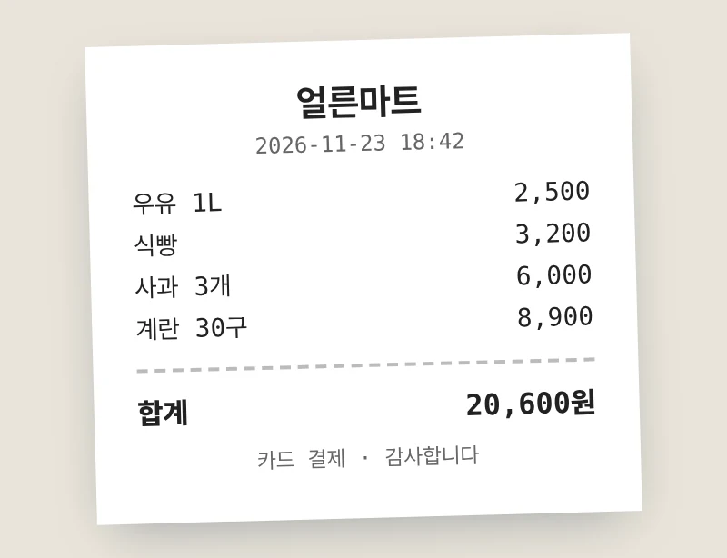
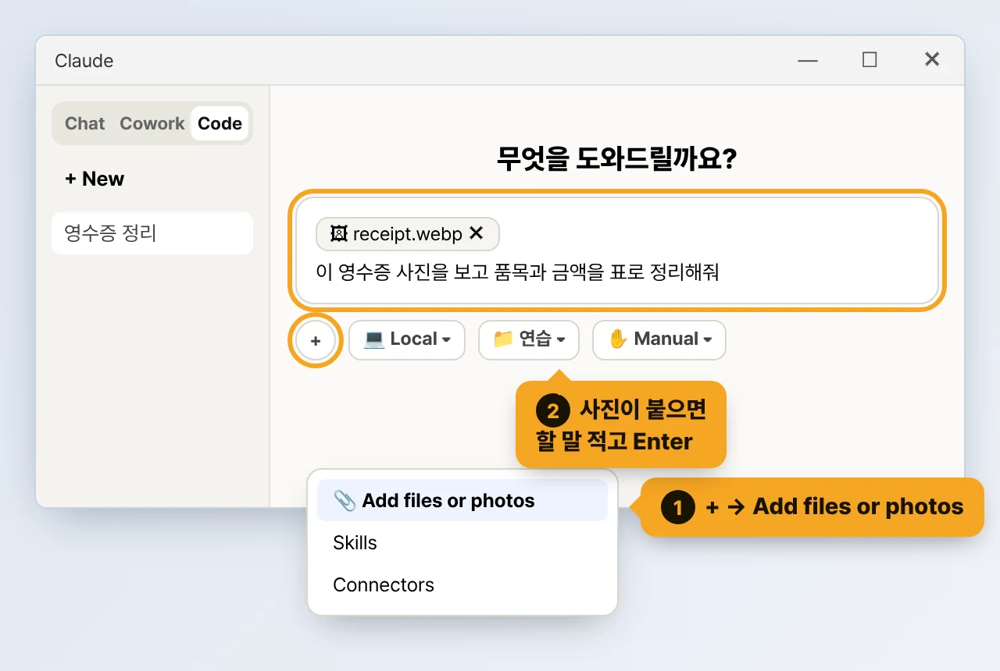
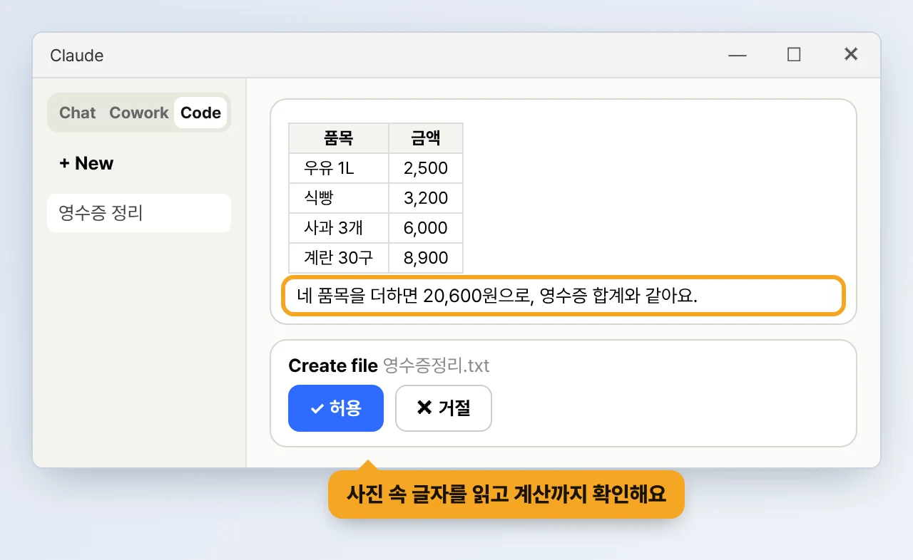
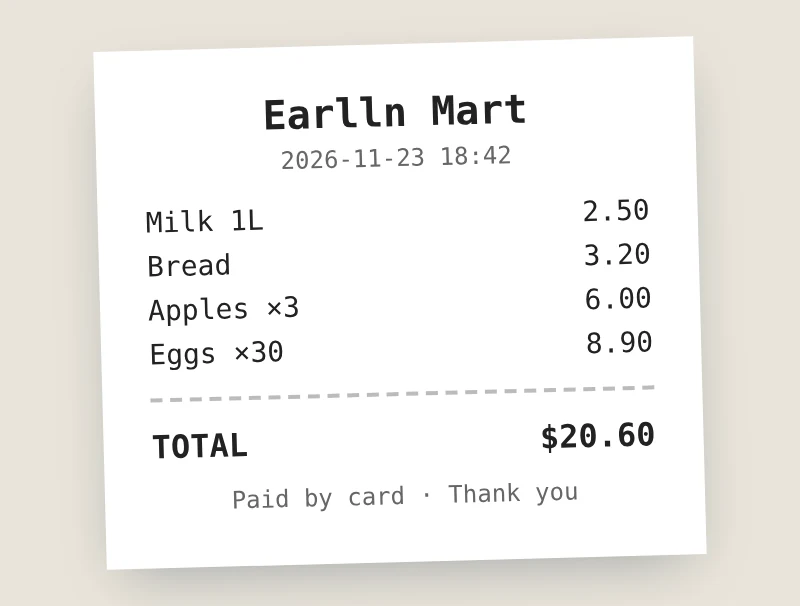
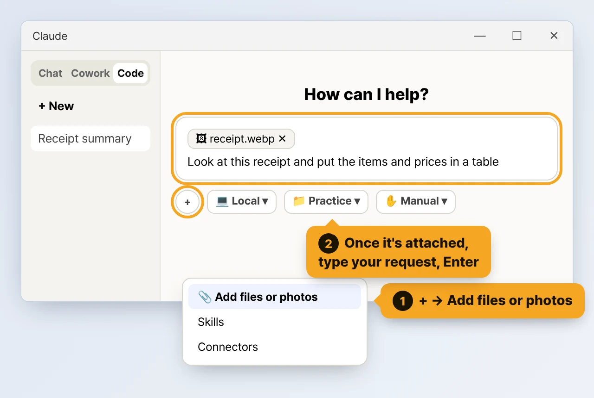
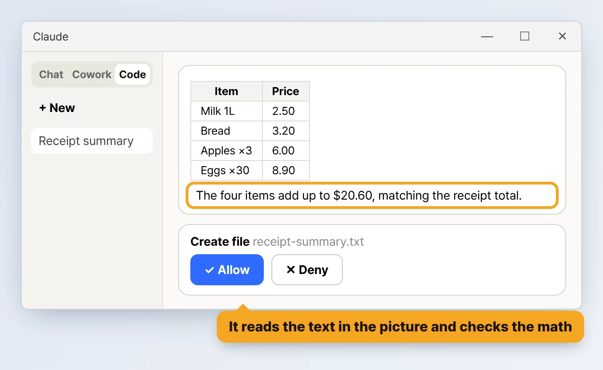

👆 이 내용은 버튼 따라 하는 실습으로도 있어요. 처음이라면 실습으로 직접 해 보고, 이 글은 복습할 때 보세요. 실습 시작하기 →
※ 글 속 그림은 따라 하기 쉽도록 그린 예시입니다. 실제 앱 화면과 모양·글자가 조금 다를 수 있어요.
오늘 새로 배우는 것
말로 설명하기 어려운 건 사진으로 보여 주면 돼요. 영수증, 표, 화면에 뜬 오류 메시지 같은 것들이요.
- 사진을 Claude에게 붙여서 보여 주기
- 사진 속 내용을 표로 정리해서 파일로 저장하기
- 내 컴퓨터 화면을 캡처(스크린샷)하는 법
1. 예시 영수증 사진 내려받기


컴퓨터의 다운로드 폴더에 receipt.webp로 저장돼요. 가지고 있는 다른 영수증 사진으로 해도 괜찮아요.
2. 사진을 입력 칸에 붙이기
+ New로 새 대화를 열고(Local · 연습 · Manual), 입력 칸 옆의 + 버튼 → Add files or photos → 다운로드 폴더 → receipt.webp → 열기.

파일을 입력 칸으로 끌어다 놓아도 붙어요. 메뉴 이름이 Add image처럼 다를 수도 있어요.
3. 사진을 보고 정리해 달라고 하기
이 영수증 사진을 보고 품목과 금액을 표로 정리해줘. 합계가 맞는지도 확인해줘
사진을 읽기만 하니까 허락은 묻지 않아요.
4. 표를 파일로 저장하기
그 표를 영수증정리.txt로 저장해줘파일 만들기 허락 카드를 읽고 허용. 연습 폴더에 영수증정리.txt가 생겨요.
사진을 보여 줄 때 조심할 점
- 숫자는 한 번 더 확인: AI도 사진 속 글자를 잘못 읽을 수 있어요. "합계가 맞는지 확인해줘"를 덧붙이면 도움이 돼요.
- 민감한 정보는 가리기: 주민등록번호, 카드 번호, 비밀번호, 다른 사람 얼굴이 보이는 사진은 올리지 않거나 가린 뒤 올리세요.
- 잘 보이게: 반듯하고 밝은 사진이 더 정확해요.
내 컴퓨터 화면 찍는 법 (스크린샷)
| 컴퓨터 | 방법 |
|---|---|
| Windows | ⊞+Shift+S → 찍을 부분을 끌어서 고르기 → 오른쪽 아래 알림을 누르고 저장(Ctrl+S) |
| Mac | ⌘+Shift+4 → 찍을 부분을 끌어서 고르기 → 바탕화면에 저장 |
저장한 사진을 + 로 붙이고 "이 오류가 무슨 뜻이야?", "이 표를 엑셀용으로 정리해줘"처럼 물어보세요.
오늘 배운 것
- 사진은 + → Add files or photos, 또는 끌어다 놓기로 붙인다.
- AI도 잘못 읽을 수 있다. 중요한 숫자는 확인하고 "맞는지 확인해줘"를 덧붙인다.
- 민감한 정보가 담긴 사진은 올리지 않거나 가린다.
※ The pictures in this guide are illustrations to make it easy to follow. The real app may look a little different or use different words.
What you'll learn today
Things that are hard to explain in words are easy to show in a picture: receipts, tables, error messages on screen.
- Attach a picture to show Claude
- Turn what's in the picture into a table saved in a file
- How to take a screenshot of your own screen
1. Download the sample receipt


It's saved as receipt.webp in your computer's Downloads folder. Any other receipt picture you have works too.
2. Attach the picture to the typing box
Open a new chat with + New (Local · Practice · Manual), then click the + button next to the typing box → Add files or photos → Downloads → receipt.webp → Open.

You can also drag the file onto the typing box. The menu item may be named differently, like Add image.
3. Ask it to read and organize the picture
Look at this receipt and put the items and prices in a table. Also check whether the total is right
It's only reading the picture, so it won't ask permission.
4. Save the table to a file
Save that table as receipt-summary.txtRead the create-file permission card and click Allow. receipt-summary.txt appears in the Practice folder.
Be careful when you share pictures
- Double-check numbers: AI can misread text in pictures. Adding "check whether the total is right" helps.
- Hide sensitive information: don't upload ID numbers, card numbers, passwords or other people's faces, or cover them first.
- Make it clear: straight, bright pictures are read more accurately.
How to take a screenshot
| Computer | How |
|---|---|
| Windows | ⊞+Shift+S → drag to select the area → click the notification at the bottom right and Save (Ctrl+S) |
| Mac | ⌘+Shift+4 → drag to select the area → saved on your desktop |
Attach the saved picture with + and ask things like "What does this error mean?" or "Turn this table into a spreadsheet layout."
What you learned today
- Attach pictures with + → Add files or photos, or by dragging and dropping.
- AI can misread too. Check important numbers and add "check whether it's right".
- Don't upload pictures with sensitive information, or cover it first.